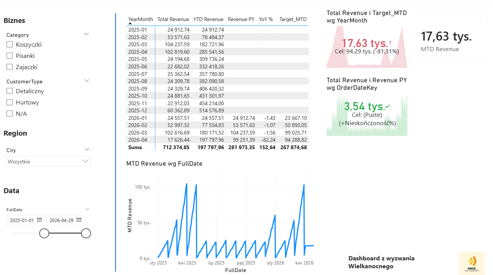

Wyzwanie dla analityków i deweloperów BI. Analizowałem dane firmy produkującej zajączki czekoladowe, koszyczki wielkanocne i pisanki. W ramach wyzwania opracowałem One Big Table (OBT), miary Time Intelligence i kartę KPI w Power BI. W ostatnim kroku analizowałem liczbę i odsetek zamówień opóźnionych oraz klientów i produkty najbardziej dotkniętych opóźnieniami.
